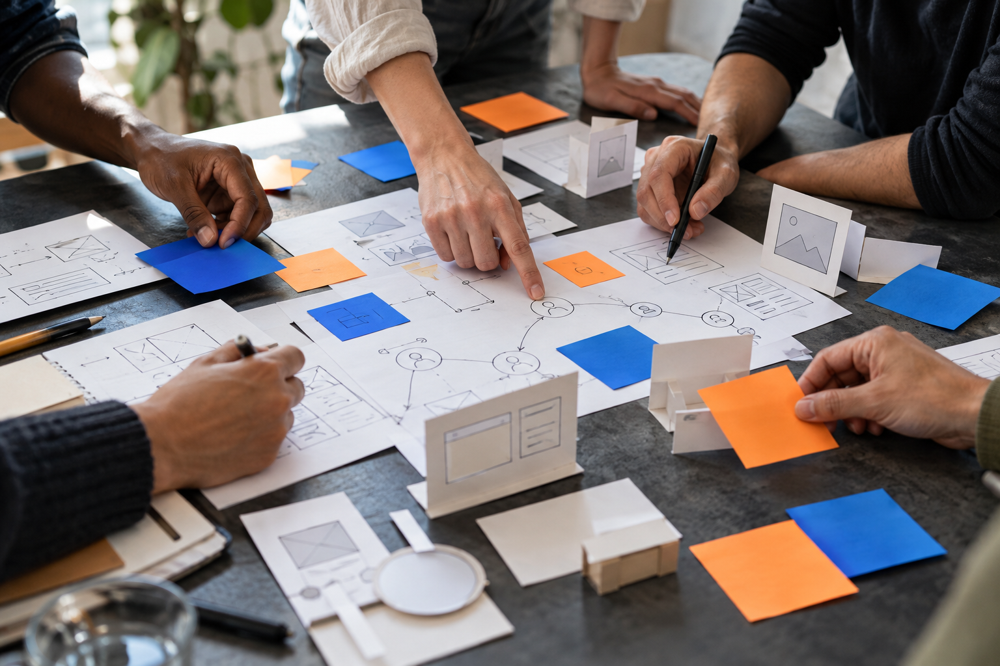

Empathise
Listen to people and observe their real experiences.
AI support: organise research notes.HUMAN-CENTRED. FUTURE-READY.
Put people at the heart of your next breakthrough. We help teams and learners solve real challenges through Design Thinking, enhanced by AI.
For corporates · Institutions · Emerging innovators
THE WAY FORWARD STARTS WITH PEOPLE
01 / YOUR ROADMAP
Start where you are. Build the capabilities and confidence to take your next step.
02 / OUR APPROACH
Start with people and a real need. Introduce technology when it helps create a better solution.
Listen to people and observe their real experiences.
AI support: organise research notes.Frame a meaningful problem worth solving.
AI support: explore patterns and assumptions.Explore possibilities before choosing a direction.
AI support: expand and challenge ideas.Make an idea tangible enough to learn from.
AI support: accelerate early mockups.Learn from real users, then refine the solution.
AI support: summarise feedback for review.
Real user research, human judgement and responsible use stay at the centre of every stage.
03 / WAYS TO WORK TOGETHER
Hands-on programmes built around your context. Each one ends with something you can use.
04 / FIND YOUR PATHWAY
Eight questions to explore your Design Thinking experience, how you use AI and what you want to achieve.
About 3 minutes · No email required
Your answers stay in this page and reset on refresh.
SMALL EXPERIMENTS. MEANINGFUL PROGRESS.
Bring a process, a project or a learning challenge.
Start by finding the pathway that fits.